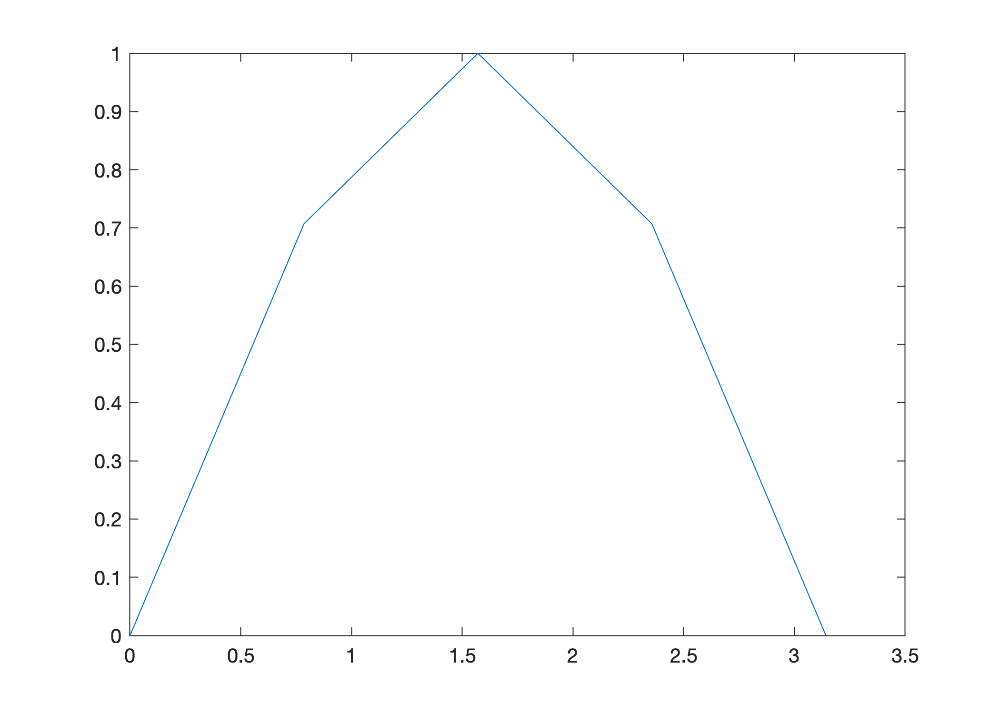
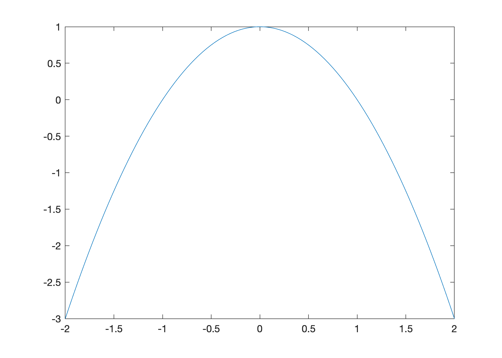
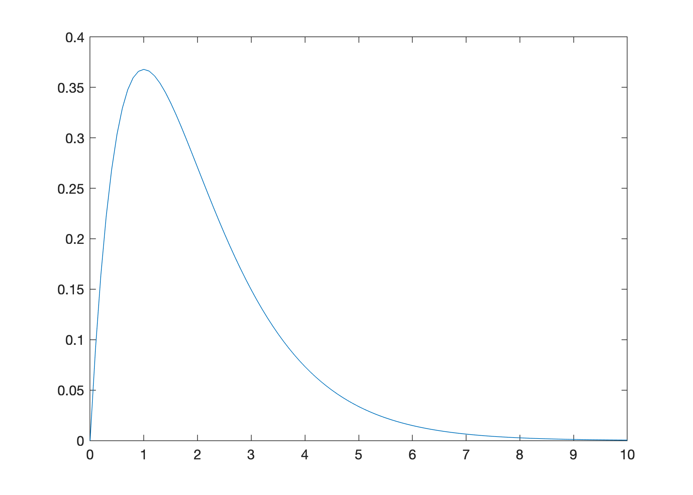
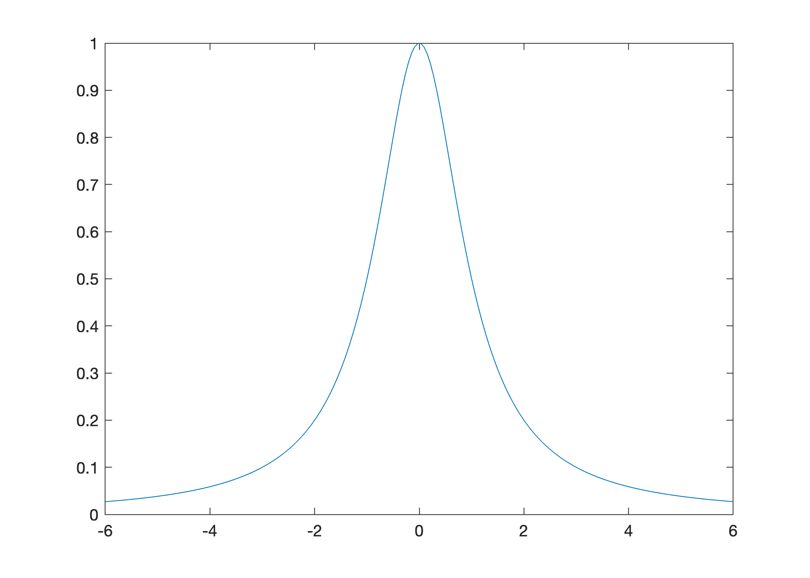
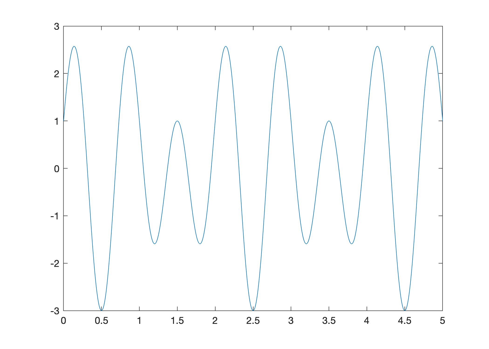

Vectorization and Plotting#
Vectorization is a fundamental concept in mathematical computing. The idea is simple but very powerful: take any function/operation \(f(x)\) and apply it to a vector \(\mathbf{x} = \begin{bmatrix} x_1 & x_2 & x_3 & \cdots & x_N \end{bmatrix}\) elementwise simultaneously:
The point is that vectorization simplifies our code and our computational thinking.
See also
Check out the MATLAB documentation to learn more about vectorization and plotting, and see Wikipedia:Array programming for a more general discussion.
Basic Plotting Procedure#
To plot the graph of a function \(y = f(x)\) over an interval \([a,b]\):
Choose a finite set of increasing values \(x_1 < x_2 < \cdots < x_N\) with \(x_1 = a\) and \(x_N = b\)
Compute the corresponding \(y\) values \(f(x_1),f(x_2),\dots,f(x_N)\)
Connect each pair of consecutive points by a straight line
Let’s make a few simple observations. A larger number \(N\) of \(x\) values over the interval \([a,b]\):
produces a smoother plot
requires more computations to generate \(y\) values
requires more memory to store the \(x\) and \(y\) values
We need to use our own judgement to choose \(N\) large enough so that the plot is smooth but small enough so that the amount of computation and memory required is not too big.
The MATLAB command plot(x,y) creates the line plot which connects the points defined by the vectors x and y. For example, the following script plots the graph of \(y = x^2\) using 7 points:
x = [-3 -2 -1 0 1 2 3];
y = [9 4 1 0 1 4 9];
plot(x,y)
We need more points to plot the function smoothly but it is inefficient to manually enter the values in the vectors x and y as we did above. Plotting is an instance where vectorization is very useful:
Create a large number of \(x\) values using
:orlinspaceUse vector operations and functions to create the corresponding vector of \(y\) values
Plot with
plot(x,y)and add style such as title, colors, line styles, legend, etc.
For example, let’s use vectorization to plot \(y = x^2\) on the interval \([-3,3]\) using 601 points:
x = -3:0.01:3;
y = x.^2;
plot(x,y)
Let’s take a closer look at each step in this procedure such as the operator : and vector operation .^.
a:h:b and linspace#
The colon operator a:h:b creates a vector of values from a to b incremented by step h. For example, create a vector of values from 0 to 1 with step 0.2:
x = 0:0.2:1
x =
0 0.2000 0.4000 0.6000 0.8000 1.0000
In other words, the command x = a:h:b creates the vector \(\mathbf{x} = \begin{bmatrix} x_1 & x_2 & x_3 & \cdots & x_N \end{bmatrix}\) such that
For example, 0:0.05:1 creates the vector \(\mathbf{x}\) of values from 0 to 1 with step 0.05:
x = 0:0.05:1;
length(x)
ans =
21
x(1)
ans =
0
x(2)
ans =
0.0500
x(11)
ans =
0.5000
x(20)
ans =
0.9500
x(21)
ans =
1
The colon operator allows the user to specify the step size between points but sometimes it is helpful to specify the total number of points. The function linspace(a,b,N) creates a vector of values from a to b using N equally spaced values. For example, create a vector of 9 evenly spaced values from 0 to 1:
x = linspace(0,1,9)
x =
0 0.1250 0.2500 0.3750 0.5000 0.6250 0.7500 0.8750 1.0000
The connection between h and N is given by
For example, the following script creates identical vectors x1 and x2:
a = 0; b = 1; N = 5; h = (b - a)/(N - 1);
x1 = a:h:b
x2 = linspace(a,b,N)
x1 =
0 0.2500 0.5000 0.7500 1.0000
x2 =
0 0.2500 0.5000 0.7500 1.0000
Vectorized Functions#
All the usual mathematical functions such as sin, cos and exp are vectorized. This means that we can apply a function to a vector and the result is the vector of function values. In other words, if \(f(x)\) is a vectorized function and \(\mathbf{x} = \begin{bmatrix} x_1 & x_2 & x_3 & \cdots & x_N \end{bmatrix}\) is a vector then
For example, the vectors y1 and y2 computed below are identical:
y1 = [sin(0) sin(pi/4) sin(pi/2) sin(3*pi/4) sin(pi)]
x = [0 pi/4 pi/2 3*pi/4 pi];
y2 = sin(x)
y1 =
0 0.7071 1.0000 0.7071 0.0000
y2 =
0 0.7071 1.0000 0.7071 0.0000
Let’s use just these 5 points to plot \(y = \sin(x)\):
x = [0 pi/4 pi/2 3*pi/4 pi];
y = sin(x);
plot(x,y)

Clearly we need more points to plot the function smoothly. Let’s use linspace to plot the function \(y = \sin(x)\) over the interval \([0,\pi]\) using 100 points:
x = linspace(0,pi,100);
y = sin(x);
plot(x,y)
Vectorized Arithmetic Operations#
Addition and subtraction are already vectorized operations. We also define vectorized multiplication, division and exponentiation:
Vectorized Operation |
MATLAB Syntax |
|---|---|
addition |
|
subtraction |
|
multiplication |
|
division |
|
exponentiation |
|
For example, the following script creates identical vectors y1 and y2:
y1 = [(-3)^2 (-2)^2 (-1)^2 0^2 1^2 2^2 3^2]
x = [-3 -2 -1 0 1 2 3];
y2 = x.^2
y1 =
9 4 1 0 1 4 9
y2 =
9 4 1 0 1 4 9
Use vectorization to plot \(f(x) = 1 - x^2\) over the interval \([-3,3]\):
x = linspace(-2,2,100);
y = 1 - x.^2;
plot(x,y)

Create the vector of values \(y = xe^{-x}\) for \(x\) from 0 to 1 with step 0.25:
x = 0:0.25:1;
y = x.*exp(-x)
y =
0 0.1947 0.3033 0.3543 0.3679
The values \(y_k\) in the vector \(\mathbf{y}\) correspond to \(x_k\) in the vector \(\mathbf{x}\) by:
The simple code above produces the same vector as the more verbose code below:
y = [0.*exp(-0) 0.25.*exp(-0.25) 0.5.*exp(-0.5) 0.75.*exp(-0.75) exp(-1)]
y =
0 0.1947 0.3033 0.3543 0.3679
Use vectorization to plot \(f(x) = x e^{-x}\) over the interval \([0,10]\):
x = 0:0.1:10;
y = x.*exp(-x);
plot(x,y)

More Plotting Examples#
Plot \(f(x) = \displaystyle \frac{1}{1 + x^2}\) over the interval \([-6,6]\):
x = linspace(-6,6,200);
y = 1./(1 + x.^2);
plot(x,y)

Plot \(f(x) = \cos(2 \pi x) + 2 \sin(3 \pi x)\) over the interval \([0,5]\):
x = linspace(0,5,500);
y = cos(2*pi*x) + 2*sin(3*pi*x);
plot(x,y)

Exercises#
Exercise 1. Without running the code, predict the values y(1), y(11) and y(21) in the code below.
x = -1:0.1:1;
y = 1 + x + x.^2;
Solution
y(1),y(11),y(21)
ans =
1
ans =
1
ans =
3
Exercise 2. Without running the code, predict the values y(1), y(51) and y(101) in the code below.
x = linspace(0,2,101);
y = x.*exp(-x.^2);
Solution
y(1),y(51),y(101)
ans =
0
ans =
0.389400391535702
ans =
0.367879441171442
0, 0.5*exp(-0.5^2), exp(-1)
ans =
0
ans =
0.389400391535702
ans =
0.367879441171442
Exercise 3. Plot \(f(x) = \ln(1 + x)\) over the interval \([0,10]\).
Exercise 4. Plot \(f(x) = \arctan(x)\) over the interval \([-5,5]\).
Exercise 5. Plot \(f(x) = 1/\sqrt(1 + x^2)\) over the interval \([4,4]\).
Exercise 6. Plot \(f(x) = e^{\sin(x)}\) over the interval \([0,4\pi]\).